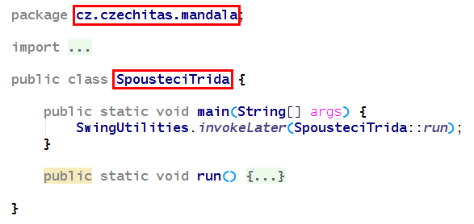

Bonus - Distribuce vaší aplikace
Jak vytvořit distribuční balík, který se bude dát nahrát běžným uživatelům?
Do pom.xml si přidejte deklaraci mavenových pluginů, které vytvoří distribuční složku PROJEKT/target/dist.
<plugin> <groupId>org.apache.maven.plugins</groupId> <artifactId>maven-jar-plugin</artifactId> <version>3.1.1</version> <configuration> <outputDirectory>${project.build.directory}/dist</outputDirectory> <archive> <addMavenDescriptor>false</addMavenDescriptor> <manifest> <addClasspath>true</addClasspath> <classpathPrefix>lib/</classpathPrefix> <mainClass>SEM PRIJDE PLNE KVALIFIKOVANE JMENO SPOUSTECI TRIDY</mainClass> </manifest> </archive> </configuration> </plugin> <plugin> <groupId>org.apache.maven.plugins</groupId> <artifactId>maven-dependency-plugin</artifactId> <version>3.1.1</version> <executions> <execution> <phase>package</phase> <goals> <goal>copy-dependencies</goal> </goals> </execution> </executions> <configuration> <outputDirectory>${project.build.directory}/dist/lib</outputDirectory> </configuration> </plugin>Tyto pluginy je nutné vložit do správné sekce, ideálně za plugin
maven-compiler-plugin:<project> (VYNECHANO PRO PREHLEDNOST) <build> (VYNECHANO PRO PREHLEDNOST) <plugins> <plugin> <groupId>org.apache.maven.plugins</groupId> <artifactId>maven-compiler-plugin</artifactId> <version>3.6.1</version> (VYNECHANO PRO PREHLEDNOST) </plugin> SEM VLOZTE DEKLARACI PLUGINU (BLOK XML UKAZANY VYSE) </plugins> </build> </project>
Když si pročtete, co jste právě přidali, uvidíte tam element
<mainClass>...</mainClass>. Do něj je nutné vepsat správné, plně kvalifikované jméno spouštěcí třídy (tedy včetně java package).Jsou to údaje z vaší třídy, ve které máte metodu
main(...).Takže například:
<mainClass>cz.czechitas.mandala.SpousteciTrida</mainClass>
Nechejte vytvořit distribuční složku vyvoláním Mavenu z IntelliJ IDEA: Maven projects -> Lifecycle -> Package
Výsledek najdete v PROJEKT/target/dist.
Bylo by fajn dodat do distribuční složky ještě spustitelné skripty, na které může běžný uživatel dvojkliknout a aplikace se mu spustí.
Připravil jsem vám je do materiálů lekce 12:
- Spustit-Windows.bat
- Spustit-Mac.command
Postupujte tedy takto:
Před použitím v nich upravte údaje (konkrétní jména).
Tip: Nejsnadněji to provedete tak, že soubory přetáhnete do IntelliJ IDEA (do prostoru středového editoru) a změníte v ní. IDEA je spolehlivý editor.
Spustit-Windows.bat:
set "APP_JAR=NAZEV VYSLEDNEHO JAR SOUBORU"Tedy například:
set "APP_JAR=Mandala.jar"Spustit-Mac.command:
APP_JAR="NAZEV VYSLEDNEHO JAR SOUBORU" APP_NAME="NAPIS V ZAHLAVI OKNA"Tedy například:
APP_JAR="Mandala.jar" APP_NAME="Mandala"
Hotové spouštěcí skripty zkopírujte do distribuční složky PROJEKT/target/dist.
A hotovo! Takto vytvořenou složku PROJEKT/target/dist můžete komukoliv nahrát, a pokud má nainstalované JRE Java 8, pojede mu to. Instalátor JRE si může kdokoliv stáhnout z https://www.java.com/.